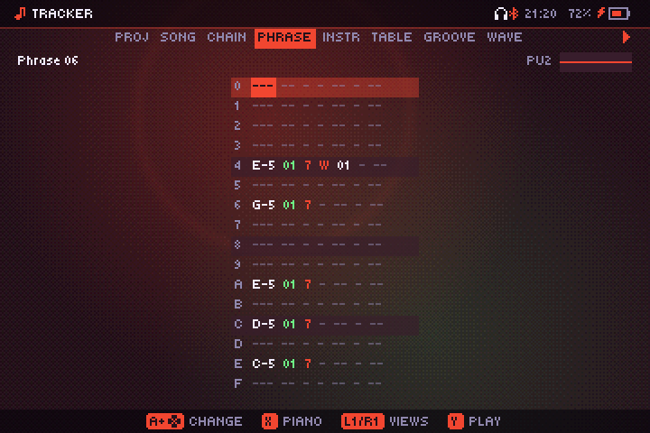

Tracker
Compose de la chiptune à la croix directionnelle, façon LSDJ, avec quelques idées empruntées à PICO-8.

Vue d’ensemble
Ouvre Jeux → Tracker. Un morceau se construit comme dans LSDJ : le song (morceau) est une liste de lignes, chaque ligne dit quelle chain (chaîne) joue chaque canal, une chaîne est une liste de phrases, et une phrase compte 16 pas de notes. Les sons viennent des instruments, qui peuvent faire tourner une table à chaque note ; le groove règle le swing, et les waves (ondes) se dessinent à la main. De PICO-8 viennent ses huit formes d’onde, un instrument sur chaque pas et un piano roll.
Les morceaux s’enregistrent tout seuls une seconde après chaque changement. Pendant que le tracker joue, ta musique se met en pause, et les visualiseurs et les jeux réagissent au tracker à la place.
Modes du morceau : Game Boy et Libre
Chaque morceau a un mode, réglé dans la vue PROJ :
- Game Boy : quatre canaux, PU1, PU2 (pulse), WAV (onde) et NOI (bruit), avec les limites de la console : largeurs d’impulsion de 12,5, 25, 50 et 75 %, une enveloppe de volume qui avance par pas à 64 Hz, le balayage de fréquence de PU1, des ondes de 32 échantillons sur 4 bits jouées à 100, 50 ou 25 % du volume, un bruit tiré d’un registre de 15 ou 7 bits, et des hauteurs arrondies aux périodes 11 bits du matériel. Les instruments sont pulse, wave ou noise.
- Libre : huit canaux, CH1 à CH8, sans ces limites. Chaque instrument a une enveloppe ADSR, et il y a un quatrième type, synth, avec les formes sine, triangle, saw, square, organ, phantom et noise.
N’importe quel instrument peut aller sur n’importe quel canal. Passer un morceau en Game Boy garde ce qu’il y a sur les canaux 5 à 8, mais ne le joue pas.
Morceau, chaînes et phrases
- Song : jusqu’à 256 lignes ; chaque ligne a un numéro de chaîne (ou rien) par canal.
- Chaîne (256 au total) : jusqu’à 16 phrases dans l’ordre, chacune avec une transposition en demi-tons. La chaîne s’arrête à sa première case vide.
- Phrase (256 au total) : 16 pas. Chaque pas a une note (de C-0 à B-9, ou OFF), un instrument, un volume (de 0 à F) et deux commandes (une lettre et une valeur hexadécimale).
Chaque canal joue sa propre chaîne et passe à la ligne suivante quand elle se termine. Un canal sans chaîne sur une ligne se repose jusqu’à ce que les canaux qui en ont une passent à la suite, pour que les lignes restent alignées. Une ligne sans aucune chaîne se repose le temps d’une phrase.
Le temps se compte en ticks, 24 par temps. Avec le groove par défaut, chaque pas dure 6 ticks, une double croche : une phrase fait donc une mesure.
Les huit vues
Les onglets du haut forment une carte, de gauche à droite : PROJ · SONG · CHAIN · PHRASE · INSTR · TABLE · GROOVE · WAVE. L1 et R1 passent à la vue voisine. Aller vers la droite avec R1 ouvre ce qui est sous le curseur :
| Depuis | R1 ouvre |
|---|---|
| SONG | La chaîne de la case |
| CHAIN | La phrase du pas |
| PHRASE | L’instrument du pas (ou le dernier au-dessus) |
| INSTR | La table de l’instrument |
| GROOVE | L’onde de l’instrument, si c’est un instrument wave |
- PROJ : le nom du morceau (A ouvre le clavier), le mode, le tempo (de 40 à 300 BPM) et le groove de départ.
- SONG : lignes × canaux de numéros de chaîne, avec l’oscilloscope de chaque canal. Le canal choisi ici est celui sur lequel jouent les chaînes et les phrases.
- CHAIN, PHRASE, TABLE : des grilles de 16 lignes.
- INSTR : la liste des réglages de l’instrument.
- GROOVE, WAVE : voir plus bas.
Sur les écrans étroits, les onglets se raccourcissent en PRJ, SNG, CHN, PHR, INS, TBL, GRV et WAV.
Éditer
Toutes les vues s’éditent de la même façon :
| Bouton | Effet |
|---|---|
| Croix | Déplacer le curseur |
| Maintenir A + ↑/↓ | Changer la valeur de un |
| Maintenir A + ←/→ | La changer beaucoup : une octave pour les notes, 16 pour les nombres, 4 pour les volumes |
| A sur une case vide | Mettre la dernière valeur utilisée |
| A A (deux fois, vite) | Mettre une chaîne, phrase, instrument ou table neuf et inutilisé |
| A sur un numéro de chaîne ou de phrase | L’ouvrir (vues song et chain) |
| B+A | Effacer |
| B+←/→ | La chaîne, phrase, instrument, table, groove ou onde précédent / suivant |
| B+↑/↓ | Sauter de 16 lignes (vue song) |
| Y | Jouer ou arrêter : le morceau depuis la ligne du curseur (PROJ, SONG), la chaîne en boucle (CHAIN), ou la phrase ouverte en boucle (les autres vues) |
| B+Y | Couper le son du canal sur lequel tu travailles |
| X | Vue phrase : passer au piano roll et revenir |
| Start | Le menu du tracker |
Une note sonne quand tu l’écris, et A sur une note la joue. Écrire une note sur un pas sans instrument y met le dernier instrument utilisé. Sous C-0 vient OFF, qui relâche la note. Les chaînes, phrases, instruments et tables sont créés la première fois que tu les édites.
Le menu Start contient :
- Lire le morceau : jouer le morceau depuis le début.
- Annuler : chaque appui sur A compte pour un pas en arrière, jusqu’à 64.
- Copier, Coller, Cloner dans un nouveau et Vider, pour ce que montre la vue (une chaîne, phrase, instrument, table, groove ou onde). Cloner le copie au premier numéro libre, et la case du morceau ou le pas de chaîne d’où tu viens passe à la copie.
- Dans la vue wave, les huit formes de PICO-8, à copier dans l’onde ouverte.
- Morceaux : un nouveau morceau Game Boy ou Libre, tes morceaux enregistrés et les exemples.
- Exporter vers la bibliothèque, Supprimer ce morceau et Retour aux jeux.
Maintiens FN pour voir les commandes de la vue où tu es.
Piano roll
Appuie sur X dans la vue phrase pour voir la phrase comme dans PICO-8 : les pas en largeur, les hauteurs en hauteur, chaque note durant jusqu’à la suivante.
| Bouton | Effet |
|---|---|
| ←/→ | Choisir le pas (le curseur saute à la note de ce pas) |
| ↑/↓ | Choisir la hauteur |
| A | Poser la note, ou l’enlever si elle y est déjà |
| Maintenir A + ↑/↓ | Monter ou descendre la note du pas |
| B+A | Effacer la note du pas |
| X | Revenir à la grille des pas |
Instruments
Jusqu’à 64. Un nouveau morceau vient avec un instrument pulse, un wave et un noise (et un synth en mode Libre). Ce que montre la vue INSTR dépend du type et du mode :
| Réglage | Ce qu’il fait |
|---|---|
| Nom | A ouvre le clavier |
| Type | Pulse, wave, noise, ou synth (Libre seulement). Le changer réinitialise l’instrument. |
| Volume | De 0 à F ; module le volume du pas |
| Enveloppe, Direction, Vitesse | Game Boy, sauf wave : niveau de départ (0–F), descendante / fixe / montante, et la vitesse (1–7 : un niveau toutes les vitesse/64 s ; 0 garde le niveau) |
| Attaque, Déclin, Maintien, Relâche | Libre : l’enveloppe ADSR, en ticks (le sustain est un niveau, 0–F) |
| Durée | Ticks avant que la note soit coupée (-- : pas de coupure) |
| Table | La table qui tourne à chaque note (-- : aucune) |
| Pan | L, LR ou R |
| Transposer | Si la transposition de la chaîne l’affecte (désactive-la pour la batterie) |
| Vibrato | Vitesse et profondeur (chiffre hexadécimal haut et bas) |
| Rapport | Pulse et synth square : 12,5, 25, 50 ou 75 % |
| Balayage | Pulse, Game Boy : le balayage de fréquence de PU1, comme le registre NR10 de la console (durée, sens, décalage) |
| Onde | Instruments wave : quelle onde (00–FF) |
| Volume d’onde | Onde, Game Boy : 100, 50 ou 25 %. Le canal d’onde de la Game Boy n’a pas d’enveloppe ; son volume va par quatre paliers. |
| Bruit court | Noise : le registre de 7 bits, plus tonal et métallique |
| Forme | Synth : triangle, sine, saw, square, organ, phantom ou noise |
La note d’un instrument noise règle la vitesse du bruit : les notes graves grondent, les aiguës sifflent. A sur un réglage joue la dernière note avec l’instrument.
Tables
Une table compte 16 lignes qui tournent une par tick tant que la note sonne, en recommençant à chaque note d’un instrument qui l’utilise (ou avec la commande A). Chaque ligne a un volume (ou rien), une transposition en demi-tons depuis la note, et deux commandes. H dans une table saute à une autre ligne, c’est comme ça que les tables bouclent : trois lignes qui transposent de 0, +4 et +7 avec H00 sur la dernière font un arpège majeur, et des transpositions qui chutent vite avec un bruit court font une grosse caisse.
Grooves
Un groove est une liste de jusqu’à 16 nombres : combien de ticks dure chaque pas, à tour de rôle. Celui par défaut, 6/6, est droit ; 7/5 ou 8/4 swinguent. Dans la vue GROOVE, A sur la case vide après le dernier nombre en ajoute un, et B+A en retire un ; le titre affiche le swing. Il y a 32 grooves ; PROJ règle celui avec lequel le morceau commence, et la commande G fait passer un canal à un autre groove existant.
Ondes
256 ondes de 32 échantillons de 0 à F, jouées par les instruments wave. Les huit premières sont celles de PICO-8 : triangle, tilted saw, saw, square, pulse, organ, noise et phantom. Dans la vue WAVE, ←/→ choisissent un échantillon, maintiens A + ↑/↓ pour le changer, et maintiens A + ←/→ pour dessiner (l’échantillon suivant prend la valeur de celui-ci). Start propose les formes de PICO-8 comme point de départ.
Référence des commandes
Chaque pas et chaque ligne de table a deux commandes. Une nouvelle note remet à zéro celles qui sont en cours (C, F, K, P, V, R, les fondus et la chute).
| Commande | Effet |
|---|---|
Axx | Lancer la table xx (AFF l’arrête) |
Cxy | Accord : alterne la note, +x et +y demi-tons à chaque tick (C47 majeur, C37 mineur) |
Dxx | Retard : le pas joue xx ticks plus tard (perdu si c’est plus long que le pas) |
Exy | Enveloppe : x est le niveau de départ ; le bit haut de y veut dire montante, ses 3 bits bas la vitesse (0 : fixe) |
Fxx | Accordage fin, en centièmes de demi-ton (signé : 01–7F vers le haut, 80–FF vers le bas) |
Gxx | Faire passer ce canal au groove xx |
Hxx | Saut. Dans une phrase : la terminer après ce pas, et commencer la suivante au pas xx. Dans une table : sauter à la ligne xx. |
Ixx | Fondu d’entrée sur xx ticks |
Kxx | Coupure : relâcher la note après xx ticks |
Lxx | Glissé : sur un pas avec une note, glisser jusqu’à elle en xx ticks au lieu de la rejouer |
M0x | Volume général, de 0 à F |
Oxx | Sortie : 0 coupée, 1 gauche, 2 droite, 3 les deux |
Pxx | Hauteur bend : centièmes de demi-ton par tick (signé) |
Rxy | Redéclencher la note tous les y ticks ; x (signé, 0–7 vers le haut, 8–F vers le bas) change le volume à chaque fois |
Sxx | Sur un bruit : S01 bruit court (7 bits), S00 long. Sur un pulse : le registre de balayage de PU1. |
Txx | Tempo, en BPM (de 28 à FF, soit de 40 à 255) |
Uxx | Fondu de sortie sur xx ticks |
Vxy | Vibrato : vitesse x, profondeur y |
Wxx | Sur un instrument wave : passer à l’onde xx. Sinon : la largeur d’impulsion, de 0 à 3. |
Xxx | Chute : la hauteur tombe et la note s’éteint en xx ticks |
Zxx | Aléatoire : ajoute de 0 à xx à la valeur de l’autre commande |
Exemples
Start → Titres propose quatre exemples, chacun montrant quelque chose. En ouvrir un n’enregistre rien tant que tu ne le modifies pas.
- Pocket Pop (Game Boy, 120 BPM) : des parties en chaînes réutilisées dans tout le morceau, et des accords avec
C. - Crypt Crawl (Game Boy, 140 BPM) : des tables pour les arpèges et la grosse caisse, des notes qui glissent avec
Let tombent avecP, et une basse sur la tilted saw de PICO-8. - Night Drive (Libre, 100 BPM) : huit canaux avec des synthés, un groove swing 7/5, du panoramique, un écho fait avec
D, et une fin en fondu avecU. - Amen Chip (Game Boy, 170 BPM) : des roulements de batterie avec
R, des coups en retard avecD, une demi-phrase qui saute dans la suivante avecH, une ligne de basse transposée par sa chaîne, et des largeurs d’impulsion changées avecW.
Import et export
Start → Exporter vers la bibliothèque rend le morceau une fois dans un WAV, dans un dossier audiofilus tracker de ton dossier de musique. La bibliothèque le récupère, donc il joue en arrière-plan comme le reste.
Les morceaux faits avec l’ancien tracker s’ouvrent convertis : chaque pattern devient une phrase et une chaîne par canal, et ses effets deviennent des commandes (arpège → C, largeur d’impulsion → W, bend → P).
Prévu : import et export MOD/XM, import de morceaux LSDJ, et synchro MIDI.